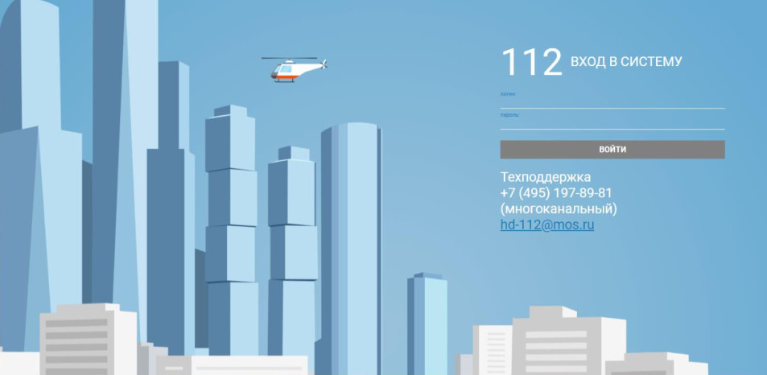
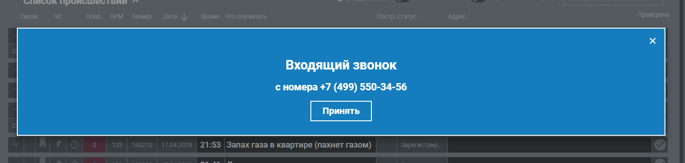

flowchart TD
%% layer 1
A[1 Вход]
B[2 Кабинет администратора]
C[12-13 Пользователи и роли]
D[28-35 Справочники]
E[20-23 Настройки системы]
F[19,25,26 Мониторинг и аудит]
G[30 Параметры ИИ]
A --> B
B --> C
B --> D
B --> E
B --> F
B --> G
%% layer 2
C --> CA[12 Пользователи] --> CAA[13 Карточка пользователя]
D --> DA[28 Группы происшествий] --> DAA[29 Сведения о группе]
D --> DB[34 Службы]
D --> DC[31 Статусы сценариев]
D --> DC[32 Статусы заявителей]
E --> EA[20 БД\nPostgreSQL]
E --> EB[22 Резервирование]
E --> EC[21 Безопасность\nRBAC]
E --> ED[23 Журналирование]
F --> FA[19 Мониторинг системы]
F --> FB[25 Статистика использования]
F --> FC[26 Аудит безопасности]
F --> FD[27 Обновление ПО]
Эскизный состав и общая логика пользовательских окон тренажёра оператора ДДС города Москвы
Интерфейсные окна
| № | Окно | Описание |
|---|---|---|
| 1 | Окно входа в систему | Аутентификация в локальном контуре |
| 2 | Личный кабинет Администратора (дашборд) | Сводка по объектам приложения |
| 3 | Личный кабинет Преподавателя (дашборд) | Сводка по занятиям, прогрессу обучения |
| 4 | Личный кабинет Обучающегося (дашборд) | Сводка по занятиям, прогрессу обучения |
| 5 | Список учебных сценариев | Перечень всех имеющихся учебных сценариев – их создание, удаление, подтверждение |
| 6 | Учебный сценарий: Тема + список учебных задач | Учебные задачи выбираются из списка имеющихся |
| 7 | Список учебных задач | Перечень всех имеющихся учебных задач |
| 8 | Учебная задача (диспозиция+эталон) | Редактирование учебной задачи. Ее подтверждение. Включает исходные данные (сообщение заявителя) и эталонное оформление Карточки-112, сложность, тайминг (по умолчанию 30 сек), критерии успешности а также прочие данные – дату создания и т.д.. (Возможен ввод вручную или генерация при помощи ИИ) |
| 9 | Список обучающихся (Для преподавателя) | Перечень всех обучающихся имеющихся в системе |
| 10 | Список тренировок | Перечень всех имеющихся тренировок – их создание, удаление. Подготовлены/Активные/Завершенные. Преподаватель и администратор видят все. Обучающийся видит только назначенные ему. Если тренировка активна и еще не пройдена, появляется кнопка Пройти при нажатии на нее Обучающийся переходит в Эмулятор АРМ-112. |
| 11 | Тренировка (перечень учебных сценариев входящих в тренировку, перечень обучающихся задействованных в тренировке, список заполненных в ходе тренировки учебных карточек) | Редактирование тренировки. |
| 12 | Список Пользователей | Перечень всех пользователей системы – добавление, удаление, назначение ролей. |
| 13 | Карточка Пользователя | Редактирование карточки пользователя. ФИО и прочие данные. Права. |
| 14 | Карточка происшествия (имитация интерфейса системы АРМ-112) | Карточка события заполняемая обучаемым (имитация выполнения действий при получении сообщения Оператором-112 в системе-112). Среди данных обязательно есть идентификатор Учебной задачи, для того, чтобы можно было определить какие исходные данные были получены пользователем и каков эталонный ответ. Если карточка заполнена и нажато принять, изменить ее уже нельзя. |
| 15 | Список всех учебных карточек (большой) | Список всех учебных карточек заполненных обучающимися. Можно фильтровать по пользователю, дате тренировки, категории и т.д. |
| 16 | Отчёты и аналитика | Отчёты по успеваемости, статистика обучения, инсайты ИИ по типичным ошибкам группы, экспорт (CSV/PDF) |
| 17 | Эмулятор АРМ-112: приём вызова | Принятие входящего вызова/сообщения в режиме обучения (виртуальная IP-телефония или текстовые сообщения). При входе Обучающемуся начинают выдаваться учебные задачи одна за одной в виде карточек происшествий, которые ему в соответствии с регламентом действий службы-112 следует заполнять. Ведется общий учет времени и прогресс, а также иные метрики тренировки. |
| 18 | Справочная база (методические материалы) | Просмотр инструкций, памяток («Работа на АРМ-112»), материалов по уровням сложности |
| 19 | Панель мониторинга системы | Состояние всех компонентов в реальном времени, нагрузка на сервер, показатели работоспособности |
| 20 | Конфигурация взаимодействия с БД | Настройка подключения к PostgreSQL, параметры резервирования |
| 21 | Настройки безопасности и RBAC | Политики безопасности, правила доступа, контроль целостности, принцип минимальных привилегий |
| 22 | Управление резервным копированием | Настройка расписания (не реже 1 раза в сутки), ручные копии, восстановление |
| 23 | Настройки журналирования | Параметры логов, хранение журналов безопасности не менее 6 месяцев |
| 24 | Системные журналы | Просмотр логов событий, ошибок и сбоев |
| 25 | Статистика использования системы | Анализ загрузки, отчёты об ошибках и сбоях |
| 26 | Аудит безопасности | Журнал действий пользователей, контроль инцидентов |
| 27 | Обновление программного обеспечения | Пакетное обновление ПО учебного комплекса |
| 28 | Список Группы происшествий |
Просмотр списка возможных групп происшествий |
| 29 | Сведения о Группе происшествий |
Возможные значения Признаков 1, 2 и 3. Перечень дополнительных полей. Редактирование Группы происшествий |
| 30 | Параметры ИИ | Настройка параметров подключения ИИ |
| 31 | Статусы сценариев | Редактирование списка статусов сценариев |
| 32 | Статусы заявителя | Редактирование списка статусов заявителей |
| 33 | Адреса | Структура адресов: Страна, Субъект, Населенный пункт, Объект |
| 34 | Службы | Редактирование списка служб |
| 35 | Роли обучающихся | Роли назначаемые обучающимся при проведении тренировок. Может быть: Оператор-112, Диспетчер ДДС или Диспетчер службы (одной из служб (34)) |
| 36 | Карточки в работе | Служебное окно эмулятора Диспетчера-112 и Диспетчеров служб в котором отражаются составленные в ходе текущей тренировки Карточки происшествий |
Описание окон
Окно входа в систему
Вход в систему. Предназначено для приветствия пользователей и авторизации.

Элементы: - Поля - Логин - Пароль - Кнопки - Вход
После ввода логина и пароля, пользователь попадает в свой личный кабинет.
Личный кабинет (2-4)
Личный кабинет пользователя. Содержание окна может меняться в зависимости от роли пользователя. Имеется меню перехода к другим окнам.
Системный администратор
Элементы: - Меню (кнопки): - Настройки ИИ - Настройки БД - Панель мониторинга системы - Резервное копирование - Журналирование - Аудит безопасности - Обновление программного обеспечения
Администратор
Элементы: - Меню (кнопки) Администрирование: - Пользователи - Список групп событий - Сведения о группе событий - Сценарии действия пользователей с окнами - Методические материалы
- Меню (кнопки) Контроль:
ТренировкиСценариииУчебные карточкиОтветы
Преподаватель
Элементы: - Меню (кнопки): - Тренировки - Сценариии - Учебные карточки - Обучающиеся - Ответы - Методические материалы
Пользователь
Элементы: - Меню (кнопки): - Мои тренировки - Ответы - Методические материалы
Учебные сценарии (5)
Содержит список всех имеющихся учебных сценариев
| Роль | Просмотр | Изменение | Добавление | Удаление |
|---|---|---|---|---|
| Администратор | + | - | - | - |
| Преподаватель | + | - | - | - |
| Обучающийся | - | - | - | - |
Учебный сценарий (6)
Окно содержащее полный набор сведений об учебном сценарии.
Каждый сценарий может входить в несколько тренировок.
| Роль | Просмотр | Изменение | Добавление | Удаление |
|---|---|---|---|---|
| Администратор | + | + | + | + |
| Преподаватель | + | + | + | + |
| Обучающийся | - | - | - | - |
Элементы: - Поля - Тема: Строка - Кто создал: id_Пользователя - Кто утвердил: id_Пользователя - Дата создания: Дата - Статус: Элемент списка Статусы сценариев (31) - Описание: Текстовое поле - Кнопки - Сохранить - Отмена - Удалить - Списки - Учебные задачи (добавление/удаление из списка существующих)
Список учебных задач (7)
Список всех существующих учебных задач. При выборе элемента из списка можно перейти к окну с конкретной учебной задачей.
Имеется фильтр задач (по дате, типу происшествия, сценарию). Имеется поиск по сообщению.
| Роль | Просмотр | Изменение | Добавление | Удаление |
|---|---|---|---|---|
| Администратор | + | - | - | - |
| Преподаватель | + | - | - | - |
| Обучающийся | + | - | - | - |
Учебная задача (8)
Основной элемент тренажера.
Содержит диспозицию (исходный текст сообщения от заявителя) и Эталон - пример заполненной Карточки происшествия (14) (копию набора данных карточки(14)).
Каждая Учебная задача может входить в один или несколько Учебных сценариев
Элементы: - Поля - id: long (скрытое) - Сообщение заявителя: Строка - Телефон (АОН): Строка - Телефон (Предоставленный): Строка - Телефон (На место): Строка - ФИО заявителя: Строка - Статус заявителя: Статус заявителя (32) - Адрес: - Координаты: Широта,Долгота (скрытое) - Страна: Строка[100] - Субъект: Строка[100] - Населенный пункт: Строка[100] - Объект: Строка[200] - Округ: Строка[100] - Район: Строка[100] - Улица: Строка[100] - Дом: Строка[20] - Корпус: Строка[20] - Строение: Строка[20] - Квартира: Строка[10] - Подъезд: Строка[10] - Этаж: Строка[10] - Код: Строка[20] - Описательный адрес: Строка - Описание со слов заявителя: Строка[2000] - Пострадавшие: Да/Нет - Нет на месте/Отказ от скорой: Да/Нет - Нет доступа/Заблаговременно (на место): Да/Нет - Нет контакта: Да/Нет - Срыв звонка: Да/Нет - Тип происшествия: - Группа происшествий(28) - Признак 1 - Признак 2 - Признак 3 - Прочие поля: опционально исходя из группы происшествий (28) - Основная служба: Службы(34) - Список привлекаемых служб: Службы(34)
| Роль | Просмотр | Изменение | Добавление | Удаление |
|---|---|---|---|---|
| Администратор | + | + | + | + |
| Преподаватель | + | + | + | + |
| Обучающийся | - | - | - | - |
Список обучающихся (9)
Список всех обучающихся. Имеется фильтр и поиск.
| Роль | Просмотр | Изменение | Добавление | Удаление |
|---|---|---|---|---|
| Администратор | + | + | + | + |
| Преподаватель | + | - | - | - |
| Обучающийся | + | - | - | - |
Список тренировок (10)
Список всех существующих Тренировок. При выборе элемента из списка можно перейти к окну с конкретной Тренировкой.
Имеется фильтр тренировок. Имеется поиск.
| Роль | Просмотр | Изменение | Добавление | Удаление |
|---|---|---|---|---|
| Администратор | + | - | - | - |
| Преподаватель | + | - | - | - |
| Обучающийся | + | - | - | - |
Тренировка (11)
Каждая тренировка содержит несколько Учебных сценариев
Свойства самой тренировки: название, дата, сложность и т.д.. Заголовок, дата, перечень учебных сценариев, перечень задействованных обучающихся. Если тренировка завершена изменить ее уже нельзя. Статусы меняются: Подготовленная -> Активная -> Завершена. Для активной тренировки в режиме реального времени отображается прогресс обучающихся (сколько выполнено учебных задач, сколько из них верно, среднее время ответа и т.д. ) – Это наверное лучше отдельным списком сделать
Элементы: - Поля - id: long (скрытое) - Название: Строка[100] - Описание: Строка[2000] - Дата начала: Дата - Дата окончания: Дата - Сложность: [Низкая, Средняя, Высокая, Адаптивная] (или от 1 до 5, Адаптивная) - Режим: [Обучение, Тестирование] - Состояние: Подготовленная, Активная, Завершенная - Список Учебных сценариев: Учебные сценарии(33) - Список Обучающихся назначенных для тренировки: Обучающиеся(12) + Роли-112 (35) - Назначенные учебные задания, их статус: Карточка (14)
прим. – Адаптивная степень сложности подразумевает, что сложность предлагаемых обучающемуся Учебных заданий определяется исходя из того насколько успешно пользователь отвечает.
В режиме обучения система подсказывает обучаемому В какие поля какие данные следует вносить. Если пользователь больше 5 секунд ничего не делает, появляются подсказки в виде попапов у полей.
| Роль | Просмотр | Изменение | Добавление | Удаление |
|---|---|---|---|---|
| Администратор | + | + | + | + |
| Преподаватель | + | + | + | + |
| Обучающийся | + | - | - | - |
Список Пользователей (12)
При выборе одного из пользователей можно перейти в Карточку пользователя (13)
Список всех обучающихся. Имеется фильтр и поиск.
| Роль | Просмотр | Изменение | Добавление | Удаление |
|---|---|---|---|---|
| Администратор | + | + | + | + |
| Преподаватель | - | - | - | - |
| Обучающийся | - | - | - | - |
Карточка пользователя (13)
Сведения о пользователе
Элементы: - Поля - id: long (скрытое) - Фамилия: Строка - Имя: Строка - Отчество: Строка - Телефон: Строка - email: Строка - логин: Строка - пароль: Строка
| Роль | Просмотр | Изменение | Добавление | Удаление |
|---|---|---|---|---|
| Администратор | + | + | + | + |
| Преподаватель | - | - | - | - |
| Обучающийся | - | - | - | - |
Карточка происшествия (14)
имитация интерфейса системы АРМ-112
Карточка события заполняемая обучаемым (имитация выполнения действий при получении сообщения Оператором-112 в системе-112). Среди данных обязательно есть идентификатор Учебной задачи, для того, чтобы можно было определить какие исходные данные были получены пользователем и каков эталонный ответ. Если карточка заполнена и нажато принять, изменить ее уже нельзя.
Элементы: - Поля - id: long (скрытое) - id учебной задачи: long (скрытое) - Телефон (АОН): Строка - Телефон (Предоставленный): Строка - Телефон (На место): Строка - ФИО заявителя: Строка - Статус заявителя: Статус заявителя (32) - Адрес: - Координаты: Широта,Долгота (скрытое) - Страна: Строка[100] - Субъект: Строка[100] - Населенный пункт: Строка[100] - Объект: Строка[200] - Округ: Строка[100] - Район: Строка[100] - Улица: Строка[100] - Дом: Строка[20] - Корпус: Строка[20] - Строение: Строка[20] - Квартира: Строка[10] - Подъезд: Строка[10] - Этаж: Строка[10] - Код: Строка[20] - Описательный адрес: Строка - Описание со слов заявителя: Строка[2000] - Пострадавшие: Да/Нет - Нет на месте/Отказ от скорой: Да/Нет - Нет доступа/Заблаговременно (на место): Да/Нет - Нет контакта: Да/Нет - Срыв звонка: Да/Нет - Тип происшествия: - Группа происшествий(28) - Признак 1 - Признак 2 - Признак 3 - Прочие поля: опционально исходя из группы происшествий (28) - Основная служба: Службы(34) - Список привлекаемых служб: Службы(34) - Оценка того, насколько точно обучающийся заполнил Карточку: 0-100% (машинное сравнение) - Оценка того, насколько точно обучающийся заполнил Карточку ИИ: 0-100% (Оценка ИИ) - Итоговая оценка: 0-100% (подтвержденная преподавателем)
Карточки создаются автоматически по мере прохождения тренировки в окне Эмулятор АРМ-112.
| Роль | Просмотр | Изменение | Добавление | Удаление |
|---|---|---|---|---|
| Администратор | + | + | + | + |
| Преподаватель | + | - | - | - |
| Обучающийся | + | + | - | - |
Список всех учебных карточек (15)
Просмотр всех заполненных обучающимися карточек. Нужен для просмотра ответов и составления отчетов (по пользователю, группе, типам вопросов, тренировкам и т.д.). Может встраиваться в другие окна (с соответствующими фильтрами по необходимости) - Рабочий стол (2, 3, 4), Тренировка (11), Карточка пользователя (13).
| Роль | Просмотр | Изменение | Добавление | Удаление |
|---|---|---|---|---|
| Администратор | + | - | - | - |
| Преподаватель | + | - | - | - |
| Обучающийся | + | - | - | - |
Отчёты и аналитика (16)
Отчёты по успеваемости, статистика обучения, инсайты ИИ по типичным ошибкам группы, экспорт (CSV/PDF)
Конкретное содержание пока не определено.
| Роль | Просмотр | Изменение | Добавление | Удаление |
|---|---|---|---|---|
| Администратор | + | - | - | - |
| Преподаватель | + | - | - | - |
| Обучающийся | - | - | - | - |
Эмулятор АРМ-112 (17)
Собственно учебное окно в котором и происходит цикл выдача-заполнение карточек в рамках Тренировки.
Принятие входящего вызова/сообщения в режиме обучения (виртуальная IP-телефония или текстовые сообщения).
При входе Обучающемуся начинают выдаваться учебные задачи одна за одной в виде карточек происшествий (14), которые ему в соответствии с регламентом действий службы-112 следует заполнять.
- Случайным образом (на основе выбранных для тренировки сценариев и входящих в них учебных заданий, а также выбранной сложности), обучающемуся выдается учебное задание
- Появляется кнопка “Принять вызов” (в центре экрана) и номер телефона по АОН

- После нажатия кнопки, создается новая
Карточка(14) и зачитывается сообщение Заявителя - Обучающийся сразу начинает заполнять
Карточку(14), Если обучающийся не успел заполнить карточку за время отведенное настройкамитренировки, переход к шагу 6 - После заполнения
Карточки, обучающийся нажимает кнопку “Сохранить” (в нижнем правом углу экрана) - Если обучающийся выполнил все учебные задания в соответствии с настройкой тренировки, тренировка заканчивается. Если нет – возврат к шагу 1.
Ведется общий учет времени и прогресс, а также иные метрики тренировки.
| Роль | Просмотр | Изменение | Добавление | Удаление |
|---|---|---|---|---|
| Администратор | + | - | - | + |
| Преподаватель | + | - | - | - |
| Обучающийся | + | + | (auto) | - |
Справочная база (18)
Список различного рода справочных материалов (ссылки на прикрепленные документы pdf, xlsx, docx и т.д.)
| Роль | Просмотр | Изменение | Добавление | Удаление |
|---|---|---|---|---|
| Администратор | + | + | + | + |
| Преподаватель | + | + | + | + |
| Обучающийся | + | - | - | - |
Панель мониторинга системы (19)
Состояние всех компонентов в реальном времени, нагрузка на сервер, показатели работоспособности
| Роль | Просмотр | Изменение | Добавление | Удаление |
|---|---|---|---|---|
| Администратор | + | - | - | - |
| Преподаватель | - | - | - | - |
| Обучающийся | - | - | - | - |
Конфигурация взаимодействия с БД (20)
Настройка подключения к PostgreSQL, параметры резервирования
| Роль | Просмотр | Изменение | Добавление | Удаление |
|---|---|---|---|---|
| Администратор | + | + | - | - |
| Преподаватель | - | - | - | - |
| Обучающийся | - | - | - | - |
Настройки безопасности и RBAC (21)
Политики безопасности, правила доступа, контроль целостности, принцип минимальных привилегий
| Роль | Просмотр | Изменение | Добавление | Удаление |
|---|---|---|---|---|
| Администратор | + | + | - | - |
| Преподаватель | - | - | - | - |
| Обучающийся | - | - | - | - |
Управление резервным копированием (22)
Не нужно – реализовано в окне Конфигурация взаимодействия с БД (20)
Настройки журналирования (23)
Параметры логов, хранение журналов безопасности не менее 6 месяцев
| Роль | Просмотр | Изменение | Добавление | Удаление |
|---|---|---|---|---|
| Администратор | + | + | - | + |
| Преподаватель | - | - | - | - |
| Обучающийся | - | - | - | - |
Системные журналы (24)
Просмотр логов событий, ошибок и сбоев
| Роль | Просмотр | Изменение | Добавление | Удаление |
|---|---|---|---|---|
| Администратор | + | + | - | + |
| Преподаватель | - | - | - | - |
| Обучающийся | - | - | - | - |
Статистика использования системы (25)
Анализ загрузки, отчёты об ошибках и сбоях
| Роль | Просмотр | Изменение | Добавление | Удаление |
|---|---|---|---|---|
| Администратор | + | + | - | + |
| Преподаватель | - | - | - | - |
| Обучающийся | - | - | - | - |
Аудит безопасности (26)
Журнал действий пользователей, контроль инцидентов
Анализ загрузки, отчёты об ошибках и сбоях
| Роль | Просмотр | Изменение | Добавление | Удаление |
|---|---|---|---|---|
| Администратор | + | + | - | + |
| Преподаватель | - | - | - | - |
| Обучающийся | - | - | - | - |
Обновление программного обеспечения (27)
Пакетное обновление ПО учебного комплекса
| Роль | Просмотр | Изменение | Добавление | Удаление |
|---|---|---|---|---|
| Администратор | + | + | - | + |
| Преподаватель | - | - | - | - |
| Обучающийся | - | - | - | - |
Список Группы происшествий (28)
Просмотр списка возможных групп происшествий
Сведения о Группе происшествий (29)
Возможные значения Признаков 1, 2 и 3. Перечень дополнительных полей. Редактирование Группы происшествий
Параметры ИИ (30)
Настройка параметров подключения ИИ
Статусы сценариев (31)
Редактирование списка статусов сценариев
Статусы заявителя (32)
Редактирование списка статусов заявителей
Адреса (33)
Не понятно – нужно ли. Пока не делать!
Структура адресов: Страна, Субъект, Населенный пункт, Объект
Службы (34)
Редактирование списка служб.
Элементы: - Поля: - id: - Название: Строка - Описание: Строка
Роли обучающихся (35)
Вряд ли нужно - роли Оператор-112, Диспетчер ДДС жестко заданы. Прочие можно взять из списка Службы (34)
Роли назначаемые обучающимся при проведении тренировок. Может быть: Оператор-112, Диспетчер ДДС или Диспетчер службы (одной из служб (34))
Сценарии действия пользователей с окнами
Сценарий 1. Настройка системы
Пользователь заходит с ролью “Администратор”.
- Вход в систему (окно 1). Администратор вводит логин/пароль и попадает в свой личный кабинет (окно 2).
Администратору доступны следующие окна.
- Управление пользователями (окна 12, 13): создание пользователей, заполнение карточки (ФИО, контакты, логин, пароль), назначение ролей — Администратор, Преподаватель, Обучающийся.
- Заполнение нормативно-справочной базы (окна 28-35):
- Группы происшествий (окно 28) и сведения о группе (окно 29): значения Признаков 1, 2, 3 и перечень дополнительных полей.
- Службы (окно 34): перечень служб экстренного реагирования.
- Статусы сценариев (окно 31) и статусы заявителей (окно 32).
- Адреса (окно 33) и Роли обучающихся (окно 35) — при необходимости.
- Настройки системы
- Настройка подключения к БД (окно 20) — параметры PostgreSQL и резервирования (окно 22 реализовано в составе этого окна).
- Настройки безопасности и RBAC (окно 21) — политики доступа по принципу минимальных привилегий.
- Настройки журналирования (окно 23) — параметры логов и сроков хранения; просмотр системных журналов (окно 24).
- Мониторинг и аудит — панель мониторинга системы (окно 19), статистика использования (окно 25), аудит безопасности (окно 26), обновление ПО (окно 27).
- Параметры ИИ (окно 30) — настройка подключения ИИ (используется для генерации учебных задач и оценки карточек).
Ограничение: пока не заведены пользователи и не наполнены справочники (окна 28-34), преподаватель не может создать полноценную учебную задачу (окно 8), а значит недоступны и учебные сценарии (окна 5-6).
Сценарий 2. Настройка учебной среды
Пользователь заходит с ролью “Преподаватель”. Цель — подготовить учебные задачи, собрать из них учебные сценарии и сформировать тренировку.
flowchart TD
A[1 Вход]
B[3 Кабинет преподавателя]
A --> B
subgraph "Заполнение вручную или с помощью ИИ"
BC[8 Учебная задача - диспозиция и эталон]
CB[6 Учебный сценарий - тема и задачи]
DB[11 Настройки тренировки - сценарии, обучающиеся, роли]
end
B --> BA[7 Список учебных задач] -- создание или изменение --> BC
B --> CA[5 Учебные сценарии] -- создание или изменение --> CB
B --> DA[10 Тренировки] -- создание или изменение --> DB
B ---> E[18 Методические материалы]
- Вход (окно 1) и переход в кабинет преподавателя (окно 3).
- Создание учебных задач (окно 8): заполнение диспозиции (сообщение заявителя, телефон, адрес, пострадавшие, тип происшествия и признаки) и эталона — эталонной Карточки происшествия (окно 14). Задача подтверждается, задаются сложность, тайминг и критерии успешности. Данные можно ввести вручную или сгенерировать с помощью ИИ (окно 30). Список задач доступен в окне 7.
- Сборка учебного сценария (окно 6): указывается тема, из списка существующих (окно 7) добавляются учебные задачи, назначается статус из справочника (окно 31). Сценарий утверждается. Просмотр всех сценариев — окно 5.
- Формирование тренировки (окно 11): задаются название, даты, сложность (в т.ч. адаптивная), режим (Обучение/Тестирование); в тренировку включаются несколько учебных сценариев; назначаются обучающиеся (окно 9) с ролями из справочника (окно 35) — Оператор-112, Диспетчер ДДС, Диспетчер службы.
- Методические материалы (окно 18) — при необходимости пополняется справочная база, доступная обучающемуся на занятии.
Сценарий 3. Проведение практического занятия на АРМ-112 (Оператор-112, карточки)
Действия Преподавателя
Заходит пользователь с ролью “Преподаватель”.
flowchart TD
A[1 Вход]
B[3 Кабинет преподавателя]
A --> B
CA[10 Тренировки]
B --> CA -- выбор --> D
subgraph D[11 Настройка Тренировки]
direction LR
CB[11 Тренировка]
CC[Добавление Обучаемых]
CD[Настройка]
CE[Активация]
end
CB --> CD --> CE
CB --> CC --> CE
E{Время тренировки закончилось}
D --> E
E -- Нет --> F([15 Контроль действий Обучающихся]) --> E
E -- Да ---> G[16 Завершение]
- Вход (окно 1) и переход в кабинет преподавателя (окно 3).
- Тренировки (окно 10): выбирается тренировка, которую требуется провести.
- Для тренировки назначаются Обучающиеся которые должны ее пройти.
- Активация: тренировка переводится из состояния “Подготовленная” в “Активная” и становится видна назначенным обучающимся в списке тренировок (окно 10).
- Контроль действий обучаемых: Преподаватель в реальном времени видит прогресс в окне тренировки (окно 11).
- Ожидание завершения тренировки. Ожидание до тех пор пока все обучающиеся не выполнят свои задания или пока не истечет время отведенное на тренировку.
- Контроль обучения: просмотр заполненных карточек всеми обучающимися — окно 15, проверка корректировка и утверждение оценки поставленной автоматически (или при помощи ИИ).
- Завершение: выполнение тренировки завершается, окно 16.
Ограничение: в тренировку (окно 11) можно включать только утвержденные учебные сценарии (окно 6), а в сценарий — только подтвержденные учебные задачи (окно 8).
Действия обучающихся
Пользователи заходит с ролью “Обучающийся”. Цель — отработать приём вызова и заполнение Карточки происшествия.
flowchart TD
A[1 Вход] --> B[4 Кабинет обучающегося]
B --> C[10 Список тренировок]
C -- начать тренировку --> CC[Выбор учебной задачи]
CC --эмулируется сообщение от заявителя --> D[17 Эмулятор АРМ-112: принять вызов]
D --> E1[диалог с заявителем]
D --> E2[14 Карточка происшествия - заполнение]
E1 --> F{Время на заполнение карточки вышло?}
E2 --> F
F -- Да --> FA{карточка заполнена?}
FA -- Нет --> X{Время отведенное на тренировку закончилось} -- Нет --> F
X -- Да --> Y[Завершение]
FA -- Да --> G[Сохранить и сверить с эталоном]
F -- Да ---> H[Автоматическое сохранение]
G --> I{Остались не выполненные задания}
H --> I
I -- Да --> CC
I -- Нет --> Y --> J[15,16 Просмотр результатов]
- Вход (окно 1). Обучающийся попадает в личный кабинет (окно 4) и видит назначенные ему тренировки в списке (окно 10).
- Старт тренировки: если тренировка активна и ещё не пройдена, в окне 10 доступна кнопка “Пройти” — открывается Эмулятор АРМ-112 (окно 17).
- В цикле обучающемуся выдаются учебные задания соответствующие набору учебных заданий из Учебных сценариев в Тренировке. Цикл выполняется до тех пор пока не будут выполнены все задания или не будет исчерпано время отведенное на тренировку.
- Приём вызова (окно 17): на основе сценариев тренировки и выбранной сложности случайно выдаётся учебная задача; появляется кнопка “Принять вызов” и номер АОН.
- Заполнение карточки (окно 14): после нажатия “Принять вызов” создаётся новая Карточка происшествия и зачитывается сообщение заявителя. Обучающийся заполняет поля (телефоны, адрес, пострадавшие, тип происшествия и признаки, службы) в соответствии с регламентом. Карточка хранит id учебной задачи (окно 8) для последующего сравнения с эталоном. Параллельно Обучающийся может вести диалог с Заявителем.
- Сохранение: по завершении обучающийся нажимает “Сохранить”. После нажатия “Принять” изменить карточку нельзя. Если отведённое тренировкой время вышло — переход к следующей задаче.
- Оценка: карточка сравнивается с эталоном (машинное сравнение 0-100% и оценка ИИ); итоговая оценка подтверждается преподавателем.
- Завершение цикла: когда выполнены все учебные задания согласно настройкам тренировки, она завершается; иначе — возврат к шагу 3. Ведётся учёт времени и прогресса.
- Результаты: просмотр заполненных карточек — окно 15, отчёты и аналитика — окно 16.
Ограничение: старт невозможен, если тренировка (окно 10) не находится в состоянии “Активная” и не назначена данному обучающемуся (окно 11).
Сценарий 4. Проведение практического занятия на АРМ-112 (Диспетчер-112, действия с карточками)
Цель — отработать весь цикл обработки Карточки происшествия. В целом схоже со сценарием 3.
Принципиальное отличие: В Сценарии 4 проигрывается не только заполнение карточек Оператором-112, но и их отработка Диспетчером-112 и Диспетчерами служб.
Путь карточек
sequenceDiagram
actor Оператор-112
actor Диспетчер-112
participant Диспетчер_служб@{ "type" : "collections" }
actor Служба
Оператор-112->>Диспетчер-112: Заполняет карточку
Диспетчер-112->>Диспетчер-112: Проверяет карточку
Диспетчер-112->>Диспетчер_служб: Направляет карточку
Диспетчер_служб-->>Служба: Направляет для отработки
Соответственно алгоритмы действий в рамках данного сценария выглядят так:
Действия Преподавателя
Заходит пользователь с ролью “Преподаватель”.
flowchart TD
A[1 Вход]
B[3 Кабинет преподавателя]
A --> B
CA[10 Тренировки]
B --> CA -- выбор --> D
subgraph D[11 Настройка Тренировки]
direction LR
CB[11 Тренировка]
CC[Добавление Обучаемых] --> CCA["Назначение ролей (Оператор-112; Диспетчер-112; Диспетчер службы)"]
CD[Настройка]
CE[Активация]
end
CB --> CD --> CE
CB --> CC
CCA --> CE
E{Время тренировки закончилось}
D --> E
E -- Нет --> F([15 Контроль действий Обучающихся]) --> E
E -- Да ---> G[16 Завершение]
- Вход (окно 1) и переход в кабинет преподавателя (окно 3).
- Тренировки (окно 10): выбирается тренировка, которую требуется провести.
- Для тренировки назначаются
Обучающиесякоторые должны ее пройти. - Каждому из
ОбучающихсяназначаетсяРоль обучающегося(Оператор-112;Диспетчер-112;Диспетчер службы)/ - Активация: тренировка переводится из состояния “Подготовленная” в “Активная” и становится видна назначенным обучающимся в списке тренировок (окно 10).
- Контроль действий обучаемых: Преподаватель в реальном времени видит прогресс в окне тренировки (окно 11).
- Ожидание завершения тренировки. Ожидание до тех пор пока все обучающиеся не выполнят свои задания или пока не истечет время отведенное на тренировку.
- Контроль обучения: просмотр заполненных карточек всеми обучающимися — окно 15, проверка корректировка и утверждение оценки поставленной автоматически (или при помощи ИИ).
- Завершение: выполнение тренировки завершается, окно 16.
Ограничение: в тренировку (окно 11) можно включать только утвержденные учебные сценарии (окно 6), а в сценарий — только подтвержденные учебные задачи (окно 8).
Применение ИИ
Реализовать позже, когда будет готов основной функционал.
В данном сценарии пользователи с ролями Оператор-112 и Диспетчер службы могут быть заменены специальным ИИ-пользователем (имеются в списке пользователей, но не имеют отдельной учетной записи).
В ходе отработки сценария ИИ-пользователи эмулируют действия обучаемых в соответствии с Ролью обучаемого. Это позволяет проводить обучение без включения в учебный процесс реальных пользователей.
Действия обучающихся
Пользователи заходит с ролью “Обучающийся”. Дальнейшие действия определяются Ролью обучающегося.
Оператор-112
Действует аналогично Сценарию №3.
Диспетчер-112
flowchart TD
A[1 Вход] --> B[4 Кабинет обучающегося]
B --> C[10 Список тренировок]
C -- начать тренировку --> DISP
DD([Оператор-112]) -.-> DISP
subgraph DISP[Отработка карточки]
D["36 Контроль карточек"]
E["14 Контроль и коррекция карточки"]
D -- Выбор неотработанной карточки --> E
end
X{Время отведенное на тренировку закончилось}
DISP --> X -- Нет --> DISP
X -- Да --> Y[15, 16 Тренировка завершена]
DISP -..-> F([Диспетчер служб])
- Вход (окно 1). Обучающийся попадает в личный кабинет (окно 4) и видит назначенные ему тренировки в списке (окно 10).
- Старт тренировки: если тренировка активна и ещё не пройдена, в окне 10 доступна кнопка “Пройти” — открывается Окно контроля
Карточек происшествий(окно 36). - Обучаемый контролирует появление новых учебных карточек и выбирает неотработанную карточку, выполняет необходимые действия
- Обучающийся при помощи соответствующей кнопки интерфейса направляет Карточку происшествия в соответствующую ей службу.
- Если время отведенное на тренировку закончилось, тренировка заканчивается, если нет, возврат к шагу 3.
- Результаты: просмотр заполненных карточек — окно 15, отчёты и аналитика — окно 16.
Диспетчер служб
Обучающийся заходит с учебной ролью одной из Служб
flowchart TD
A[1 Вход] --> B[4 Кабинет обучающегося]
B --> C[10 Список тренировок]
C -- начать тренировку --> DISP
DD(["Диспетчер-112"])
subgraph DISP[Отработка карточки]
D["36 Контроль карточек"]
E["Выполнение действий"]
D -- Выбор поступившей карточки --> E
end
DD -.-> DISP
X{Время отведенное на тренировку закончилось}
DISP --> X -- Нет --> DISP
X -- Да --> Y[15, 16 Тренировка завершена]
DISP -..-> F([Служба])
- Вход (окно 1). Обучающийся попадает в личный кабинет (окно 4) и видит назначенные ему тренировки в списке (окно 10).
- Старт тренировки: если тренировка активна и ещё не пройдена, в окне 10 доступна кнопка “Пройти”.
- Пользователь попадает в окно
Контроля карточек происшествий(окно 36) и видит только те карточки которые были направлены в его службу (для пожарной охраны свои, для полиции свои, для медицины свои и т.д.) - Обучаемый контролирует появление новых учебных карточек и выбирает неотработанную карточку, выполняет необходимые действия (высылает наряд и т.д.)
- Если время отведенное на тренировку закончилось, тренировка заканчивается, если нет, возврат к шагу 3.
- Результаты: просмотр заполненных карточек — окно 15, отчёты и аналитика — окно 16.
Сценарий 5. Проведение занятий в режиме имитационного моделирования.
Будет реализовано позже
Тренировка в целом аналогична Сценарию №4.
Однако, в данном случае карточки выдаются не одна за одной, а генерируются в режиме реального времени. Все Обучающиеся имеют доступ к карте города. Все направляемые к месту происшествия службы отражаются на карте города. Учебный процесс выполняется в реальном времени. Время занятия: 1-2 учебных часа. Задача - отработать действия всей ДДС исходя из реально складывающейся обстановки.